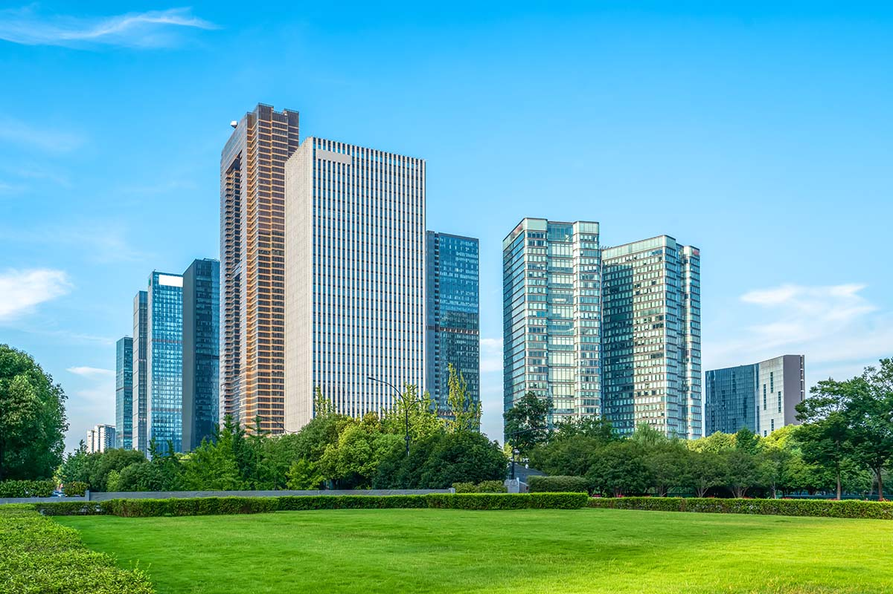

ترميم واجهات مباني وحجر بالرياض لاستعادة قوة الواجهة وجمالها | 0502833163
ترميم واجهات مباني وحجر بالرياض يحافظ على مظهر المبنى ويحميه من آثار الشمس والغبار والرطوبة. الواجهة ليست تفصيلاً جمالياً فقط، بل طبقة حماية تحتاج فحصاً عند ظهور تشققات أو تلف في الحجر أو الدهان.

علامات حاجة الواجهة للترميم
من العلامات تقشر الدهان، سقوط أجزاء من اللياسة، اتساخ الحجر، ظهور شروخ حول النوافذ، أو تلف ألواح الكلادينج. ترميم واجهات مباني بالرياض يبدأ بمعرفة سبب التلف لا بمجرد إعادة الطلاء.
تجديد واجهات حجر
تجديد واجهات حجر قد يشمل تنظيف الحجر، إعادة تثبيت القطع، معالجة الفواصل، واستبدال الأجزاء المتضررة. اختيار الطريقة يعتمد على نوع الحجر وحالة التركيب.
دهان واجهات خارجية
دهان واجهات خارجية يحتاج تجهيز سطح جيد، معالجة الشروخ، اختيار دهان مناسب للأجواء، والالتزام بطبقات التنفيذ. الدهان فوق سطح غير معالج يفقد جودته بسرعة.
ترميم كلادينج وتلييس واجهات
ترميم كلادينج يختلف عن تلييس واجهات؛ الأول يتعلق بالألواح والتثبيت والفواصل، والثاني يرتبط بالمونة والتسوية والدهان. تحديد نوع الواجهة يختصر الوقت والتكلفة.
ربط الواجهة بباقي أعمال الترميم
إذا كانت الواجهة جزءاً من تجديد شامل، فمن الأفضل تنسيقها مع ترميم منازل وفلل بالرياض حتى لا تتعارض مراحل التكسير والدهان والتنظيف.
كلمات البحث المرتبطة بهذه الخدمة
يركز هذا الدليل على ترميم واجهات مباني وحجر بالرياض داخل الرياض، مع مراعاة كلمات مرتبطة مثل ترميم واجهات مباني بالرياض، تجديد واجهات حجر، دهان واجهات خارجية، ترميم كلادينج، تلييس واجهات. الهدف هو مساعدة الباحث على فهم الخدمة قبل التواصل، سواء كان يبحث عن ترميم واجهات مباني وحجر بالرياض أو يقارن بين الخيارات المتاحة حسب نية البحث: خدمة.
الكلمات المفتاحية في المقال
- ترميم واجهات مباني وحجر بالرياض
- ترميم واجهات مباني بالرياض
- تجديد واجهات حجر
- دهان واجهات خارجية
- ترميم كلادينج
- تلييس واجهات
أسئلة شائعة
هل يمكن ترميم جزء من الواجهة فقط؟
نعم، إذا كان التلف محدوداً يمكن معالجة الجزء المتضرر مع مراعاة توافق اللون والخامة.
هل تنظيف الحجر يكفي؟
أحياناً يكفي التنظيف، لكن التشققات أو الفواصل التالفة تحتاج معالجة إضافية.
هل ترميم الواجهة يحتاج سقالات؟
يعتمد ذلك على ارتفاع المبنى وطبيعة الوصول إلى نقاط العمل.
تحتاج خدمة ترميم في الرياض؟
اتصل على 0502833163 أو أرسل صور الموقع والتفاصيل عبر واتساب لنرتب الخطوة المناسبة.
أرسل التفاصيل عبر واتساب ←